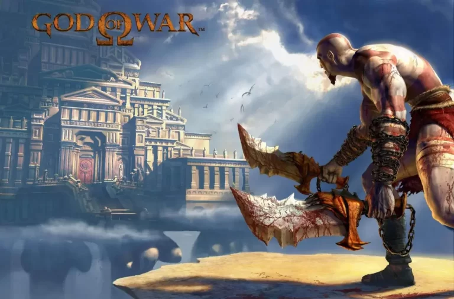
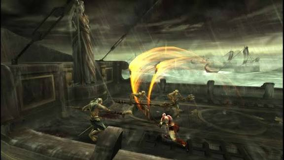
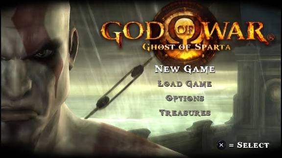
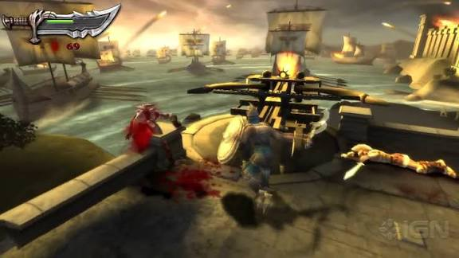

Best PSP Games for PPSSPP Emulator
Best PSP Games for PPSSPP Emulator

God of War: Chains of Olympus (PPSSPP – PSP) is one of the most popular and acclaimed games on the PSP platform. To this day, it remains one of the most downloaded titles for the PPSSPP emulator, garnering millions of downloads every year. Inspired by Greek mythology, the game delivers an intense narrative filled with action, violence, and epic challenges.

In this entry, players step into the role of Kratos, the legendary Spartan warrior serving the Gods of Olympus. The story takes place before the events of the original God of War, showcasing pivotal missions in Kratos' life as he battles mythological creatures, gods, and dark forces to maintain the balance of the world.

The gameplay is centered around intense and dynamic combat using the iconic Blades of Chaos—swords attached to chains that allow for lightning-fast attacks, powerful combos, and brutal finishers. Throughout the journey, players must defeat diverse enemies, solve intricate puzzles, scale giant structures, and navigate ancient temples filled with dark atmospheres, even swimming through rivers and seas to reach new enemy-controlled areas.
Check out the best ppsspp cheats codes
The game stands out for its impressive graphics for the PSP, fluid animations, and an epic soundtrack that heightens immersion. To assist progression, Chains of Olympus provides on-screen instructions, helping players learn new moves, interactions, and mechanics during each stage.

Running flawlessly on PPSSPP for Android, this title is widely considered one of the best action-adventure games on the PSP. It is highly recommended for fans of the God of War franchise and anyone looking for an engaging game with a strong storyline and memorable battles.
Spider Man 3